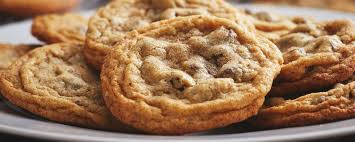

Making homemade biscuits is a quick process that relies on cold ingredients to achieve a light, flaky texture. Depending on your preference, you can make American-style buttermilk biscuits or British-style tea biscuits.

Ingredients
Flour: 2 ½ cups (313g) all-purpose flour.
Leavening: 1 tablespoon baking powder and ½ teaspoon baking soda.
Fat: ½ cup (113g) unsalted butter, frozen or very cold, cubed.
Liquid: 1 cup cold buttermilk.
Seasoning: 1 teaspoon salt and 1 tablespoon sugar (optional).
Instructions
Prep: Preheat oven to 425°F (220°C).
Mix Dry: Whisk flour, baking powder, baking soda, salt, and sugar in a large bowl.
Cut in Butter: Add cold butter to the flour. Use a pastry cutter or fork to work it in until it looks like coarse crumbs with pea-sized bits.
Add Liquid: Make a well in the center and pour in the buttermilk. Stir gently with a spoon until a shaggy dough forms.
Fold for Layers: Turn dough onto a floured surface. Pat into a rectangle, fold in thirds like a letter, and repeat 2–3 times to create flaky layers.
Cut & Bake: Cut rounds with a biscuit cutter (press straight down, do not twist). Place on a baking sheet and bake for 12–15 minutes until golden brown.